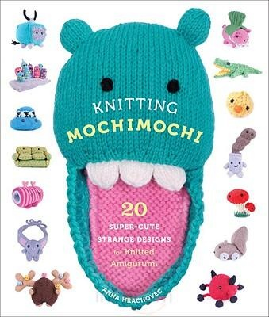
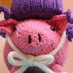
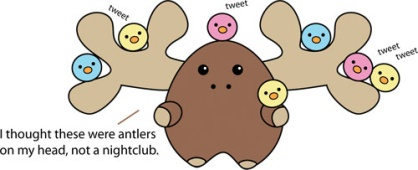
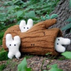
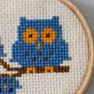
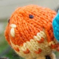
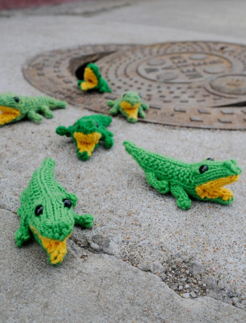

It's no secret that we love knitting toys, so when we heard one of our favorite toy designers, Anna Hrachovec from Mochimochi Land, was releasing her own book (Knitting Mochimochi), we were thrilled! We've been big fans of all her patterns to date and love the little creatures we've created using them. Anna's signature quirky style is prevalent in her 20 new designs in the book, which range from a quartet of pigs with wigs to a grouchy vintage couch--there's definitely something for everyone! We were lucky enough to get the chance to ask Anna a few questions about her new book, knitting, and life in general, so read on to find out what she has to say, plus, find out how you can score a free copy of Knitting Mochimochi for yourself!

How did you get started knitting? How old were you? What was the first thing you ever knit?
I first learned to knit in Japan, when I was there as an exchange student in high school. (I was 18.) My darling host sisters, who were in their 20s at the time, taught me how to knit a scarf. It was purple "fun fur," so you couldn't see my mistakes, and I wore it quite a bit!
You obviously have a love and knack for knitting toys. Do you have any other types of items you like to knit too?
You know, once I started knitting toys about three and a half years ago, I immediately loved it so much that I really have stuck to only knitting toys since then! I keep telling myself that once I get sick of the toys, then I'll knit some other things for a change, but it just hasn't happened yet.
Do you have a favorite type of yarn to design or work with? What type of fiber do you think works best for your toys?
I love working with wool, just because of its flexibility and the nice way it feels. Outside of my "tiny" series, I've used worsted-weight yarn for most of the patterns I've designed (I love the colors Cascade 220 comes in), but that's almost more out of habit than anything else -- I tend to concentrate much more on interesting shaping and color than material or weight.
How long after you started knitting did you start designing your own items? What was the first thing you ever designed?
After I took up knitting as a more regular hobby (later in college, from the influence of my awesome mother-in-law), It was about three years before I created my own design. The first thing I designed was a knitted bonnet, and it turned out surprisingly well! It wasn't the kind of pattern that would be easy to write up and have someone else use, though.
There is a great section in your book with helpful tips on creating your own designs. What do you think is the most important thing for a young designer to keep in mind as they're working on getting their original ideas down on paper?
It has to be all about experimentation and discovery. I think even if someone gives you a step-by-step process (which I more or less try to do in the book), you will learn the most by jumping into it and learning from your own mistakes. And I think toys are a great thing to start with because you can try something out and start over again if you don't like where it's going.
A sketch of Anna's adorable Confused Moose who makes his debut in Knitting Mochimochi.
Can you take us through your design process?
I start out with a sketch - sometimes from multiple angles - and try to get a very basic idea of the types of pieces and shaping that I'll have to do to make it work. If necessary (as when I'm using a special stitch pattern), I'll do some simple math for guidelines, then I'll just get started on the main piece. As I knit, I type down everything that I do, and if I decide to rip out a few rounds, I save different versions of my typed notes so that I can go back to them later if I change my mind again. Sometimes I get lucky and don't have to re-start too far in, and things just come together, and sometimes I make multiple versions of the toy so that I can compare them side-by-side. It's not very scientific, but I've found that sometimes I come up with interesting solutions to knitting challenges by making myself be creative as I knit.
Once I have a version that I'm happy with, I clean up my notes into a pattern, and when I find time I try to knit it all over again from my pattern to make sure it's correct. Then after that I enlist some wonderful testers to give it a try themselves, and sometimes I make design changes based on their feedback.

What is your favorite design that you've come up with to date?
Argh, that's such a difficult question to answer! It's seriously always the thing that I just finished designing. But I will say that one of the patterns I was most excited about when it debuted was the Woodins--I was still relatively new to designing when I made it in 2007, so it was a fun challenge to work on, and when it made it into Knitty I was beyond thrilled.
Is there any place you like to look to for inspiration?
There is inspiration for me in everything, but if I really think about it, I think it's the mundane and even cliché things - like chain stores, TV commercials, and plain old people watching - that inspire me.

In the past year you've added several cross stitch patterns to your Mochimochi Land shop. What other types of crafts do you enjoy doing?
I tend to be pretty obsessive in the long term with crafts (hence the knitting only toys for several years), so branching out to cross-stitch was kind of a big deal for me! I also have a beautiful sewing machine that I never use (every year I tell myself that I'm going to start sewing toys, but it hasn't happened yet), and there are tons more crafts that I would love to do, if only I didn't have that next knitted toy or cross-stitch that I can't wait to get started on.
How did you come up with the name "Mochimochi" and what does it mean?
You may be familiar with mochi, the Japanese sticky rice sweet. I love mochi, and I thought that the way it was sweet and soft had nice connotations for my toy designs. Mochimochi is actually an onomatopoeia for something that's sticky like mochi. And it's fun to say!
What does the future hold for Mochimochi Land?
Well, three and a half years ago I had no idea that I would have written a book of patterns by now, so I guess I'd like to keep going with the flow! But in the short-term future, I'm working on a solo show to be at gallery hanahou in NYC this fall. I'm so excited about it!

What does your desk look like right now?
It's somewhere between chaos and order. I do tend to switch from one project to another pretty quickly, so I have embroidery hoops on one end (frames for my newest cross-stitch design), the other end has some miscellaneous knitting needles and a pair of pliers (from what I can't remember now), and one of the shelves in crammed with new business cards and pipe cleaners (for my Tiny Perching Pigeons). I guess it's time for a little tidying up!
How would you describe your personal style?
Although I'm all about the bright colors in my designs, I like to otherwise surround myself with modern neutrals, and just a splash of color, I also like just a small touch of vintage kitsch.
What's in your knitting bag?
Right now it's supplies for knitting pigeons! I'd like to make some to leave around in various public places for anyone to find. But letting them go might be a bit hard for me!

Anna is also offering the Baby Gators pattern from her book for free! I don't think I've ever seen such a cuddly reptile before.
Doesn't that interview get you totally jazzed up about knitting? Thanks Anna so much for sharing with us!
If you happen to be in the vicinity of New York City this weekend, Anna is having a release party for Knitting Mochimochi this Sunday at Brooklyn General. It sounds like it's going to be awesome, so those of you in the area can check out the details on Anna's blog, or if you're unfortunately too far from NYC to make it, just head to the Mochimochi Land Shop to get yourself a signed copy of her new book!
Here at Kathryn Ivy we're also giving away a copy of the book to two lucky readers. There are two chances and two ways to win--first we'll be drawing a name from the comments on this post, and second we'll be randomly selecting one of our followers on Twitter! The deadline to enter both giveaways is noon (PST) on Friday July 16th. This giveaway is open to everyone no matter where you're from. Good luck!
All images above belong to Mochimochiland.com. Thanks Anna for letting us use them!


{kind=link}
{kind=link}
{kind=link}
{kind=link}